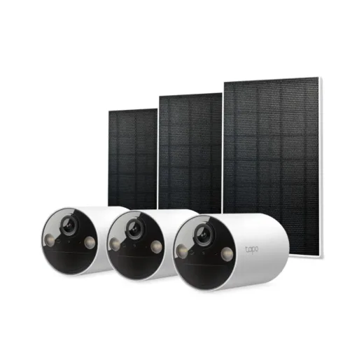
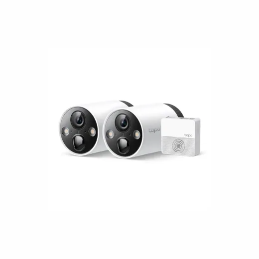
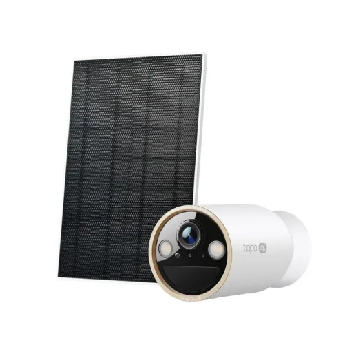
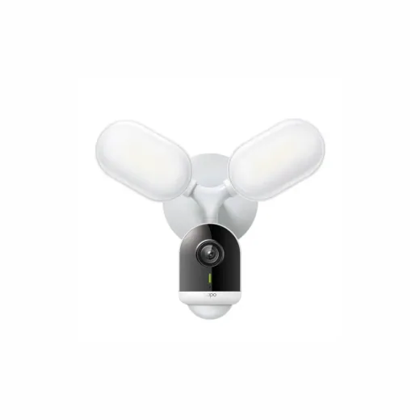
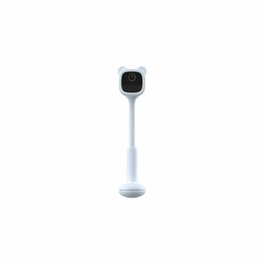
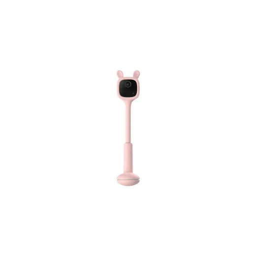
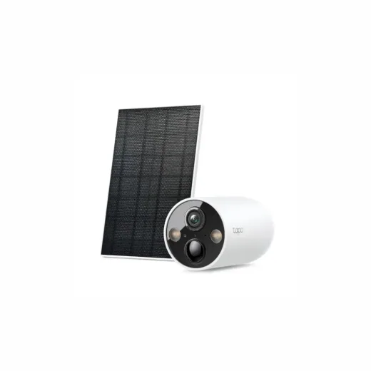
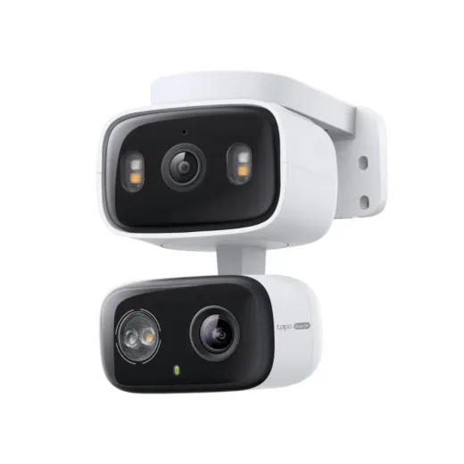
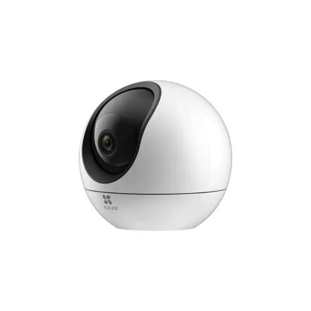

Vigilancia
Camara de Vigilancia Inalambrica TPLINK Tapo C402 Kit + Panel Solar (3Pack)
L 7,200
En Sycom
Precio en cada tienda
| Tienda | Precio | Antes | Disponibilidad | |
|---|---|---|---|---|
| Sycom | L 7,200 | — | Disponible | Ver en tienda › |
Precios referenciales tomados de cada tienda el 14 de noviembre de 2026. El precio válido es el que muestra la tienda al comprar.
Otros cámaras y seguridad Vigilancia

Camara de Vigilancia Inalambrica TPLINK Tapo C420S2 2K 2 PackL 5,650En Sycom
Camara de Vigilancia Inalambrica TPLINK Tapo C460 4K Exterior con Panel SolarL 4,895En Sycom
Camara de Vigilancia Inalambrica TPLINK Tapo C720 + ReflectorL 4,600En Sycom
Camara de Vigilancia Inalámbrica para Bebe EZVIZ 2MP AQUA CS-BM1L 3,450En Sycom
Camara de Vigilancia Inalámbrica para Bebe EZVIZ 2MP Rosado CS-BM1L 3,450En Sycom
Camara de Vigilancia Inalambrica TPLINK Tapo C425 Exterior con Panel SolarL 3,450En Sycom
Camara de Vigilancia Inalambrica Doble Lente 360º TPLINK Tapo C246D 2KL 3,450En Sycom
Camara de Vigilancia Inalámbrica EZVIZ CS-C6 PLUS 2K Lens 4MML 2,800En Sycom